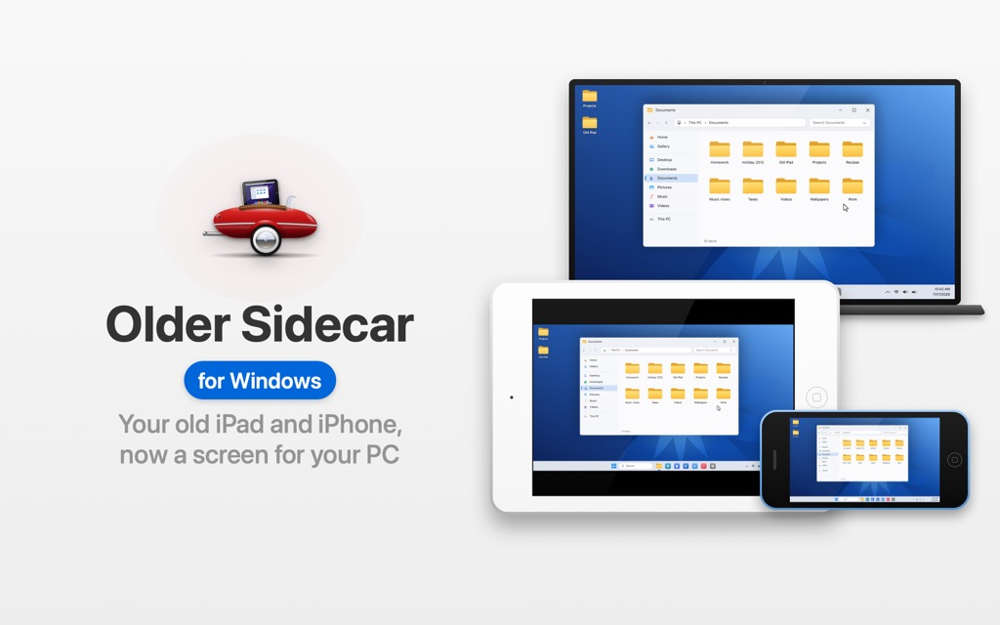
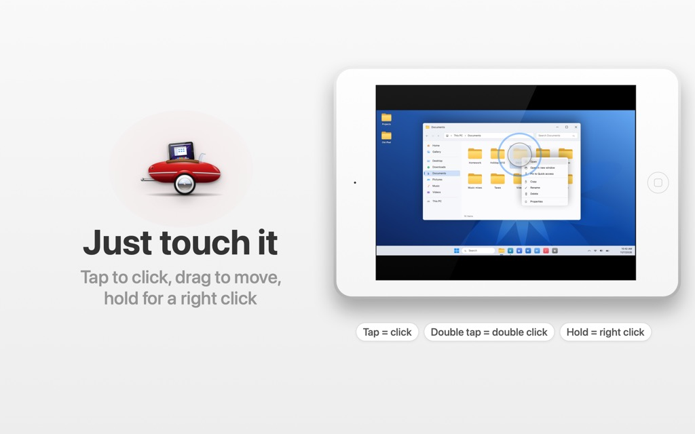
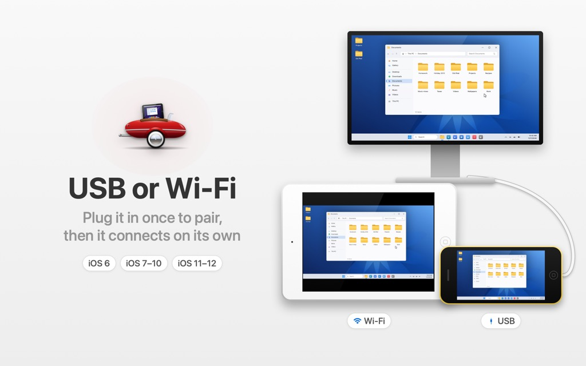
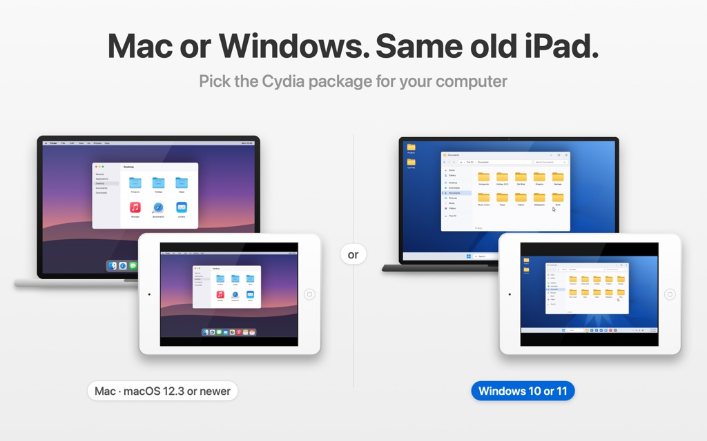

Add this address as a source in Cydia (with http, not https):
http://oldersidecar-windows.surge.sh/
Then install Older Sidecar (Windows) for your iOS version. For a Mac use oldersidecar.surge.sh.



